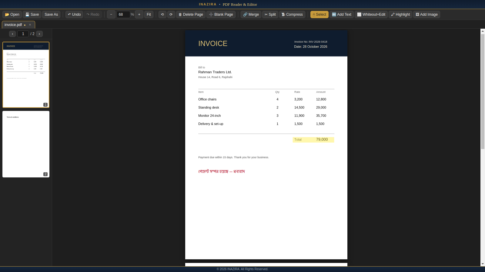

What you can do
Everything runs on your computer — no account and no upload.
Read comfortably
Smooth scrolling through every page, page thumbnails, a separate tab for each PDF, full-screen reading (F11), and text you can select and copy.
Add text — English & বাংলা
Click anywhere and type. Choose font, bold, italic, size and colour. Bengali text is supported with a built-in font.
Whiteout & retype
Cover a word or line, then type the correction in the same spot. The cover blends into the paper colour of scanned pages.
Highlight
Drag to highlight in any colour. Move, resize or remove highlights any time before you save.
Add images
Insert a logo or signature image, crop it, then drag and resize it exactly where you want it.
Pages & files
Rotate, delete, insert and re-order pages. Merge PDFs together, or split one into several files and choose which to keep.
Undo & redo
Every step can be undone. You are asked before closing anything with unsaved changes.
Private by design
No internet needed. Your documents are opened and saved only on your own computer.
Compress
Make big scanned PDFs much smaller for email or upload. Pick a level; a compressed copy is saved and your original stays untouched.
Opens from Windows
Right-click a PDF and choose Open with, or drag a PDF onto the window. Each one opens in its own tab.
Exact zoom
Type any zoom size (like 125), use Ctrl + and Ctrl −, or pick one from the list. Ctrl 0 fits the page to the window width.
Fast with big scans
Only the pages you are looking at are drawn, so long, heavy scanned PDFs open in seconds and stay smooth.
How to install
Takes about a minute. No administrator rights needed.
- Download the installer using the button above.
- Double-click the downloaded file. If Windows shows “Windows protected your PC”, click More info, then Run anyway.
- Follow the steps (the default folder is fine), then open Inazira PDF Reader & Editor from your Desktop or Start menu.
Make it your default PDF app (optional): right-click any PDF → Open with → Choose another app → Inazira PDF Reader & Editor → tick Always use this app.
To uninstall: Settings → Apps → Installed apps → Inazira PDF Reader & Editor → Uninstall. The portable ZIP needs no installation: unzip it anywhere and run InaziraPDF.exe.
Check your download
Compare the SHA-256 checksum of the file you downloaded with the value below.
| Installer | Inazira-PDF-Reader-Editor-Setup-2.1.1.exe10ae0a4011d26e08095880d5e36aa5831bc65f9bca0d70ee059a39c5c0acd5f2 |
| Portable ZIP | Inazira-PDF-Reader-Editor-2.1.1-portable-win-x64.zip83df4d35462c3d8e907b62c33ff10b9949813c3bdc89a0f0985af9a7e03b8db3 |
In Windows PowerShell:
Get-FileHash .\Inazira-PDF-Reader-Editor-Setup-2.1.1.exe -Algorithm SHA256
Good to know
| Works on | Windows 10 and 11 (64-bit). Other systems are not available yet. |
| Recommended | 4 GB RAM or more; about 350 MB free disk space. |
| Languages in text | English and Bengali (বাংলা). Other scripts are not supported yet. |
| Whiteout | Covers content visually; it does not erase it from the file. Do not rely on it to hide confidential information. |
| Compress | Shrinks the JPEG images inside a PDF (typical for scans and photos). A PDF that is mostly text barely changes in size. |
| Not supported yet | Password-protected PDFs, form filling, OCR and digital signatures. |
What's new
Version 2.1.1 — 30 October 2026
- First public release.
- Continuous scrolling, tabs, thumbnails, fit-to-width and typed zoom.
- Full-screen reading (F11) and a show/hide page list (Ctrl+B).
- Zoom shortcuts: Ctrl +, Ctrl −, Ctrl 0 (fit width) and Ctrl 1 (real size).
- Compress PDFs (saves a separate, smaller copy).
- Open PDFs with “Open with”, or by dragging them onto the window.
- Edit with text (English and Bengali), highlight, whiteout & retype, and images with crop, move and resize.
- Rotate, delete, insert, re-order, merge and split pages; full undo and redo.